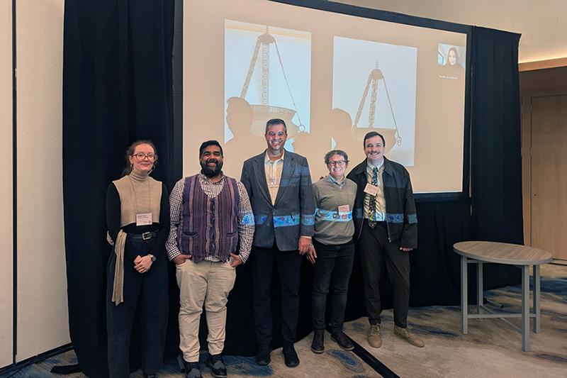

Digital Reimaginings of Middle Eastern Studies I: Crafting Virtual Worlds Brick by Brick
November 23, 2025
Video games are not only for entertainment or achieving in-game objectives; they can also provide meaningful learning experiences. They can enhance teaching by providing students with interactive and engaging learning experiences. However, there is also a risk of conveying negative messages and spreading misunderstanding, misconceptions, and stereotypes. When integrated thoughtfully, they can offer students an immersive platform for analyzing patterns, interpreting cultural narratives, acquiring knowledge, gaining insights, and deepening their understanding of key topics and themes.
This morning, I presented “Classroom in the Ludic Age: Teaching Islamic Art with Video Games” at the 2025 Middle East Studies Association annual meeting in Washington, DC. The session, “Digital Reimagining of Middle Eastern Studies I: Crafting Virtual Worlds Brick by Brick,” was organized and chaired by Professor Ali Alibhai of the University of Texas.
In my paper, I presented two cases from an undergraduate seminar, “Medievalism in Video Games: Art, Culture, and Theory,” which I designed and taught in Fall 2023 in the Department of the History of Art at the University of Michigan. In this course, my students engaged with video game narratives and representations alongside theoretical and art historical readings, and participated in game-based assessments, visual analysis, and critical writing to study Islamic art and visual culture through video games. The first case examines real-life medieval monuments and their representations in the three-dimensional environments of historical video games. The second case explores a historical simulation on a text-based, two-dimensional platform that proved effective in transforming students’ learning experiences and decision-making. I shared my course outcomes, including student feedback and insights based on two of the games played, Assassin’s Creed: Mirage and The Hajj Trail.
